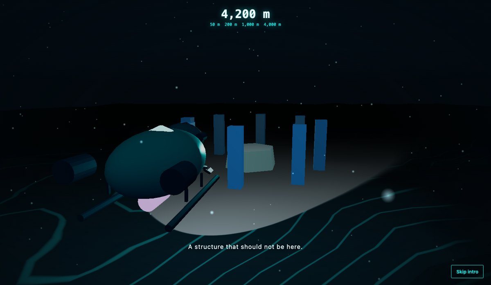
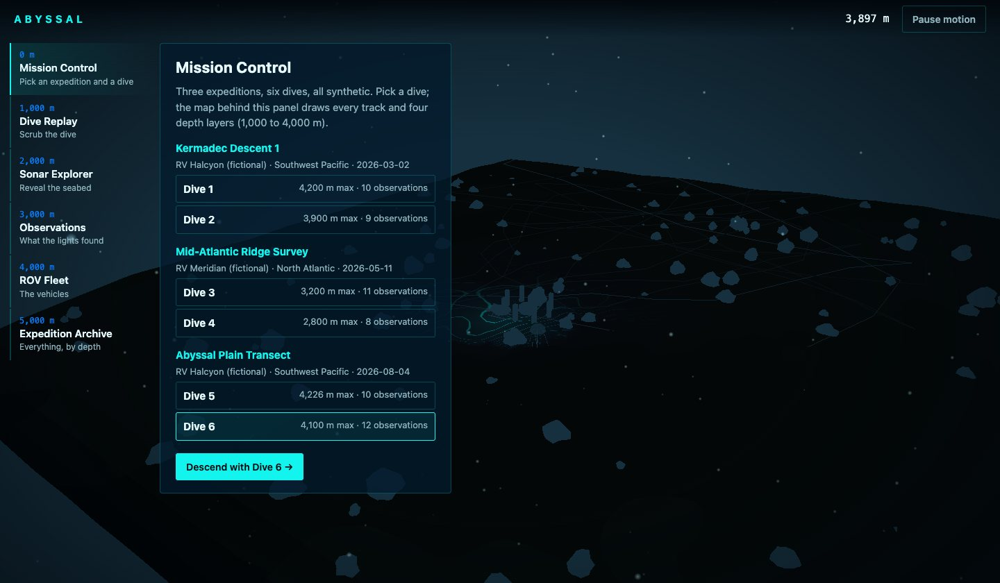
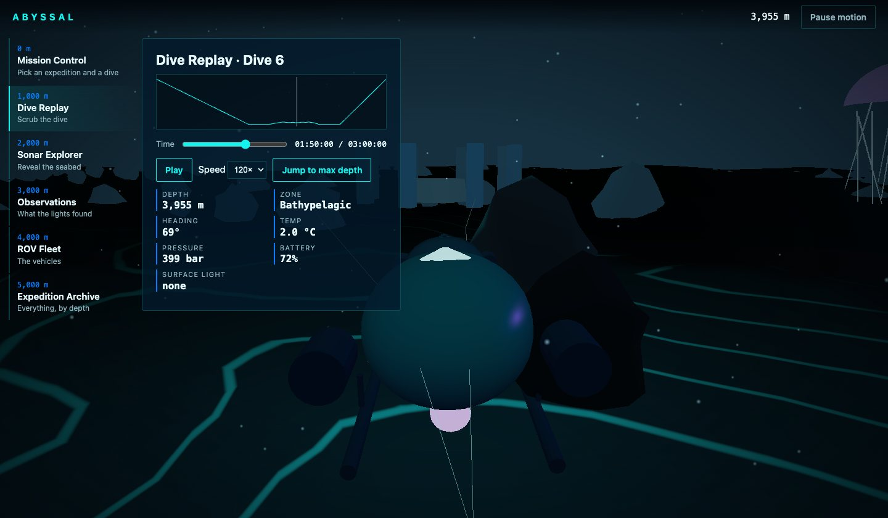
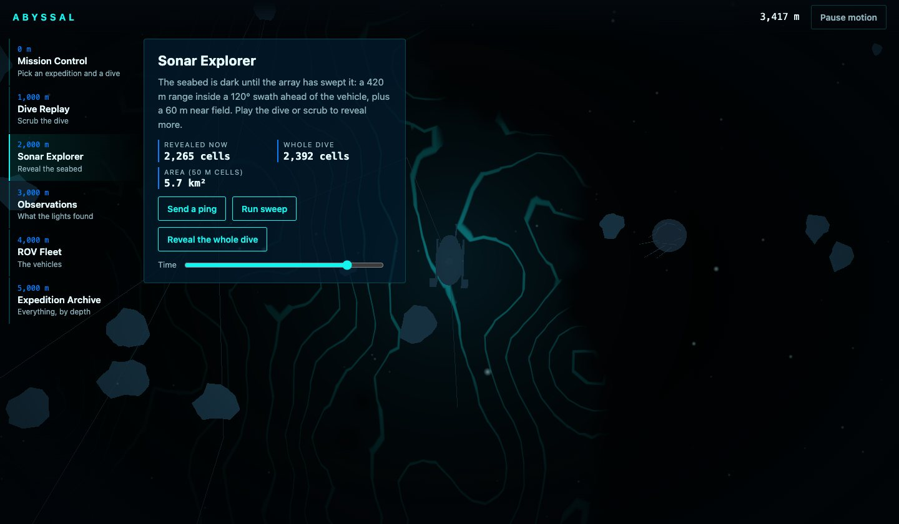
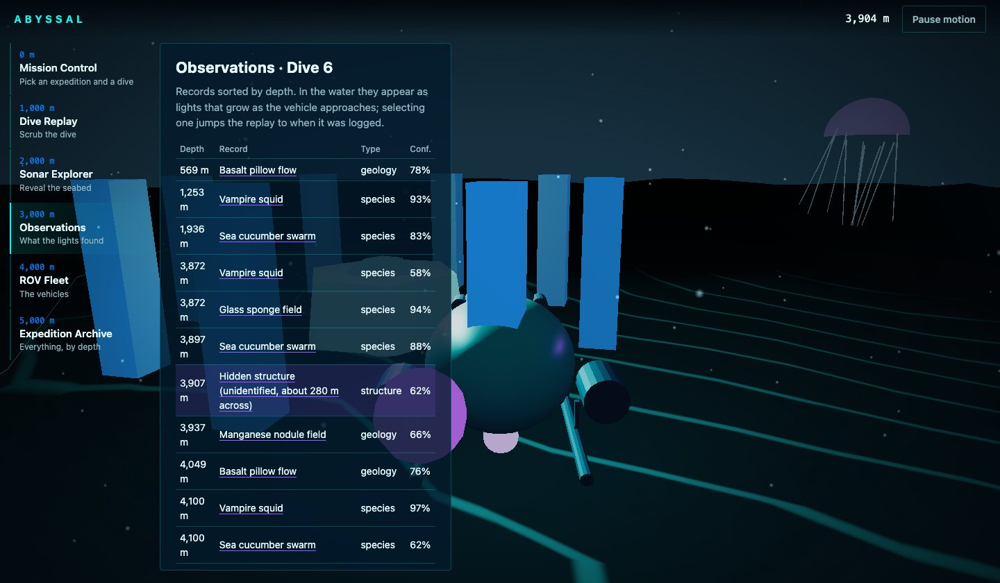
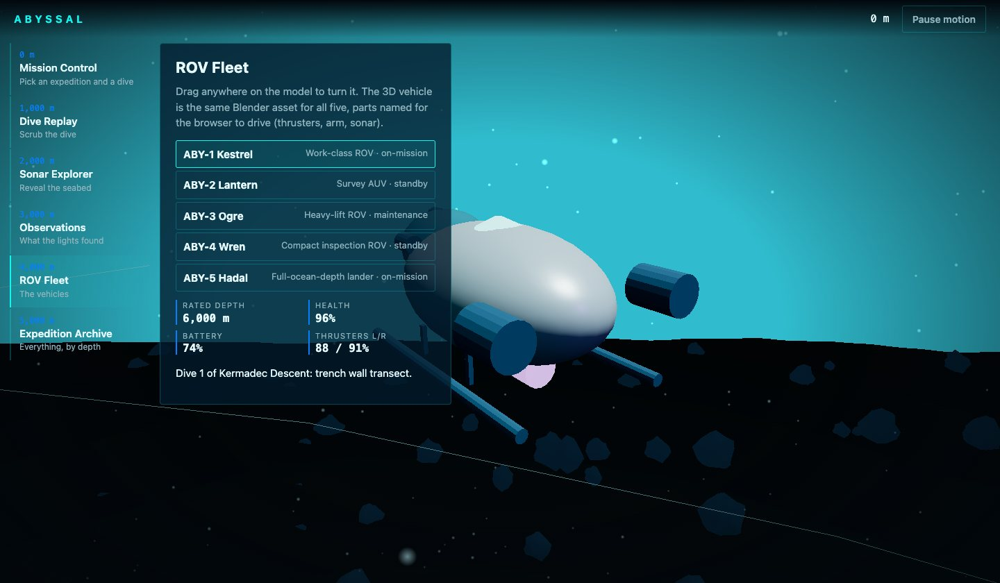

Blender · three.js · motion design · 2026-10
What Does a Descent Look Like When the Asset Is Built in Blender?
A deep-ocean exploration demo in which a scripted Blender submersible (2,266 triangles, 100 KB) is validated by re-importing it into a fresh scene, driven live in the browser, and introduced by a 22-second descent whose headlights become the mask that opens Mission Control. 6 dives, 60 observations, one hidden structure, all synthetic.

Built from blueprint 01 of a written build book (Advanced Engineering Build Book, Volume VII) as one vertical slice. Everything is synthetic: the expeditions, vessels, vehicles, telemetry, species and the hidden structure come from a seeded generator, and the seabed is a noise function. Not built: PostGIS/TimescaleDB (the demo reads JSON), MapLibre/deck.gl, FastAPI (a Node API serves the same contract), auth, a demo video, and a measurement on a physical GPU. The twelve agent roles are committed as Claude Code configuration, but this repository was produced by one session playing them in sequence, not by parallel subagents.
01 — The problem
A Blender model is easy to show and hard to ship. The book's rule for this volume is that Blender owns the editable asset and the browser owns everything that moves. So the question is practical: what has to be true of a .blend file for a web page to drive it, and how do you know it stayed true after export?
The test case is an ocean-exploration product: a mission control for dive replays, sonar, species records and an ROV fleet, introduced by a descent that must hand off to the real application without a cut.
02 — What I built
One repository with the whole pipeline, not just the site.
- A scripted asset:
model/build.pybuilds a modular submersible (Hull, two thrusters, manipulator arm, camera rig, two spotlights, sonar array, sample container) and a seabed kit, exports GLBs and renders a poster still. - A validator:
model/validate.pyre-imports the GLBs into an empty scene and fails on a missing node, an orphan, a non-unit pivot scale or a size budget breach. - A browser runtime that animates the named pivots, lights the seabed from the vehicle's lamps in a custom terrain shader, reveals sonar coverage incrementally and fades observations in as the vehicle approaches.
- An intro on the wall clock with a skip control from the first frame, ending in a light mask that is the only place Mission Control exists until it covers the screen.
- Fallbacks: a poster still for no WebGL or a lost context, static keyframes for reduced motion, and a table or list for every canvas fact.
03 — How it was built
- 01
Graybox first, then a contract
The vehicle is eleven named parts with unit-scale pivots because the browser will rotate those nodes: thruster props, the arm, the sonar array. Blender's Y-forward / Z-up becomes -Z forward / Y-up in glTF, so the nose points to -Z in three.js; the runtime depends on that, and the asset contract says so.
- 02
A validator that is allowed to fail
validate.pyloads the exported GLB into a factory-empty Blender and checks it against the contract. It caught nothing on the first pass, which is not evidence it works, so the checks are written as hard failures with a nonzero exit code: a required name missing, an object without a parent, a pivot scaled off 1, more than 6,000 triangles or 250 KB for the vehicle (4,000 and 150 KB for the kit). The vehicle is 2,266 triangles and 100 KB; the kit 1,536 and 52 KB. - 03
One function for what the water looks like
envAt(depth)turns a depth into fog density, surface light, particle speed and a water tint: light falls off with an e-folding of 60 m and is gone by 1,000 m. The scene background, fog, sun and the UI's "surface light" readout all read it, so the page and the world agree. Pressure at 4,100 m is 413 bar from the hydrostatic formula, which is what the readout shows.export function envAt(depthM: number): Env { const d = Math.max(0, depthM); const light = d >= 1000 ? 0 : Math.exp(-d / 60); const fog = 0.002 + clamp(d / 4500) * 0.018; ... - 04
Sonar as a coverage map
The seabed is dark until swept. Each telemetry sample reveals cells within 420 m inside a 120° swath ahead of the heading, plus a 60 m near field, and a 120 × 120 data texture feeds the terrain shader. One dive covers 15 to 19 percent of the 6 km site; all six together cover 32.7 percent. The sonar panel shows the same count as text.
- 05
The hand-off
The descent is a GSAP timeline on the wall clock (lag smoothing off, so a slow GPU drops frames instead of stretching the story). At 19.8 s the headlights have widened and a CSS variable starts to grow: the HUD's
clip-pathcircle and the glow at its rim use the same number, so Mission Control exists only inside the light. Skip fast-forwards to that moment rather than cutting to the end. - 06
Failing on purpose
The tests turn WebGL off, dispatch a lost-context event, set reduced motion and shrink the window to a phone. In all four the dive list, replay readout, sonar counts, observation table and fleet details still work, because they were built as DOM first and the canvas second.
04 — Results
The descent, at the moment the headlights widen on the structure:
Mission Control and the replay:





Checks. 24 unit and API tests (99% statement coverage of the domain package), 18 Playwright tests in three consecutive green runs, and a clean typecheck. The tests include a visual regression on five product states, the reduced-motion walk, graphics failure, context loss and a phone-width layout.
Performance, measured on an Apple M3 Pro with software WebGL (SwiftShader), not a GPU. 47 draw calls and 44,738 triangles in the replay view; 565 KB of gzipped JavaScript; 100 KB and 52 KB of GLB. Software rendering took 4.7 s to the largest contentful paint and a median 33.3 ms per frame. Those two are bounds from a CPU rasteriser; I did not measure a real GPU, so there is no 60 fps claim here.
Found while testing. The first few WebGL frames hold the main thread long enough that a keyboard focus() call can fail. The tests retry; the first mitigation to try for real users is deferring the instanced rocks until after first paint.
05 — What I'd do next
- Run the performance script on a physical GPU and a mid-range phone, then add a quality ladder (resolution and rock count) driven by measured frame time.
- Replace the seabed noise with a real bathymetry adapter and the JSON files with the PostGIS schema from the book.
- Touch-test the fleet drag and the wheel-to-descend gesture on a phone; both are only exercised with a mouse.
- Model the vehicle with proper UVs and a texture pass; the current materials are flat colours.